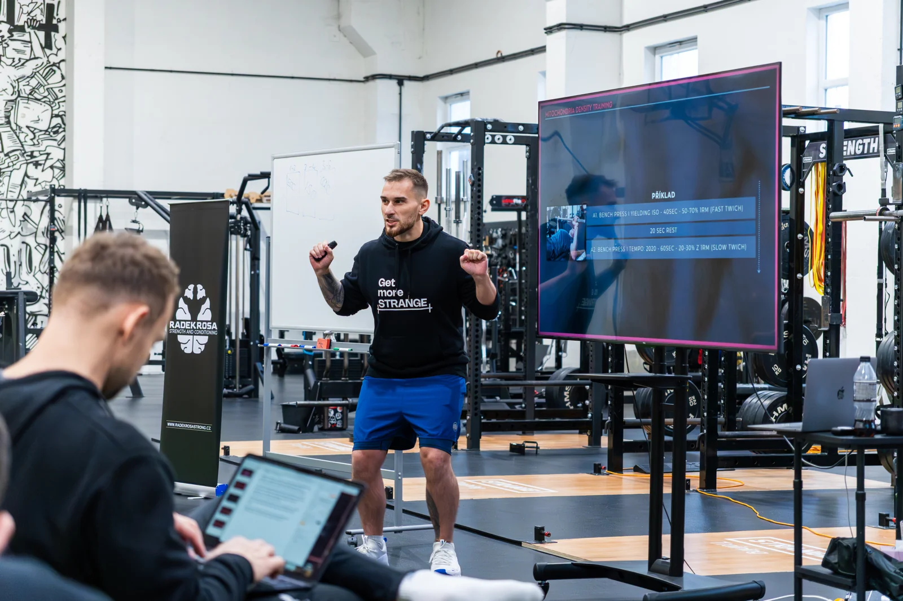

Registrace běžíBrno · Strange Training
Svalové kontrakce Level 1 + 2
Dva dny teorie a praxe. Poznej využití svalových kontrakcí pro rozvoj výkonu, hypertrofii i rehabilitaci a rozšiř svůj trenérský repertoár.
- 7–8 hodin denně
- PDF + video galerie metod
- Certifikát
14 000 Kčza oba dny
Program a registrace